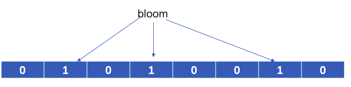
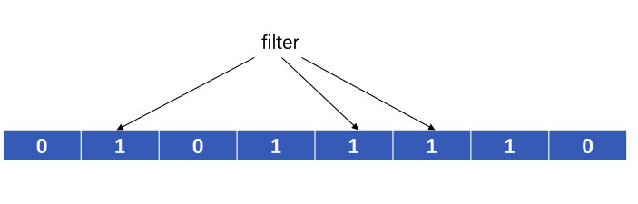
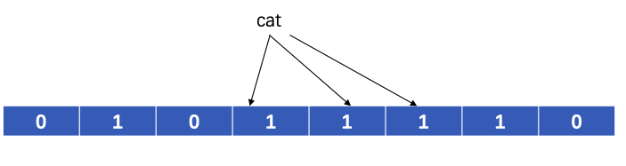

布隆过滤器简介
布隆过滤器（Bloom Filter）是一个基于hash的概率性的数据结构，它实际上是一个很长的二进制向量，可以检查一个元素可能存在集合中，和一定不存在集合中。它的优点是空间效率高，但是有一定false positive(元素不在集合中，但是布隆过滤器显示在集合中)。
布隆过滤器原理
布隆过滤器就是一个长度为m个bit的bit数组，初始的时候每个bit都是0，另外还有k个hash函数。
布隆过滤器加入元素
当加入一个元素时，先用k个hash函数得到k个hash值，将k个hash值与bit数组长度取模得到个k个位置，将这k个位置对应的bit置位1。

在加入了bloom之后，再加入filter。

布隆过滤器查询元素
在布隆过滤器中查询元素比较简单，同样地，先用k个hash函数得到k个hash值，将k个hash值与bit数组长度取模得到个k个位置，然后检查这k个位置的bit是否是1。如果都是1，布隆过滤器返回这个原始存在。
布隆过滤器的false positive
查询元素中，有可能k个hash值对应的位置都已经置一，但这都是其他元素的操作，实际上这个元素并不在布隆过滤器中，这就是false positive。
看下面这个例子，添加完bloom,filter后，检查cat是否在
布隆过滤器中。

实际上，cat并不在布隆过滤器中。所以说，布隆过滤器返回true，元素不一定在其中；但是返回false，元素一定不在布隆过滤器中。
布隆过滤器的false positive计算
false positive计算，有3个重要的参数。
m表示bit数组的长度k表示散列函数的个数n表示插入的元素个数
布隆过滤器中，一个元素插入后，某个bit为0的概率是
1 | (1−1/m)^k |
n元素插入后，某个bit为0的概率是
1 | (1−1/m)^(nk) |
false positive的概率是
1 | (1−(1−1/m)^nk)^k |
因为需要的是k个不同的bit被设置成1，概率是大约是
1 | (1−e^(−kn/m))^k |
这个就是false positive的概率
Golang代码实现
代码实现在我的github仓库。
这个Golang实现，支持并发操作，批量加入byte数组，字符串，数字等。
bit数组的大小选择
代码中，bit数组表示成[]byte数组。由于后续在[]byte定位hash需要取余操作，%操作是一个比较慢的操作，如果数组的长度是2的n次方，%可以被优化成& (2^n-1)。因此，New()函数初始化的时候，会将[]byte数组的长度拉长到2^n，加快计算。
1 | type Filter struct { |
hash函数的选择
因为需要快速的操作，因此不选择md5,sha等耗时比较久的hash操作。经过比较之后，我选择使用murmur3的hash算法，来对key进行hash。
1 | // baseHash returns the murmur3 128-bit hash |
输入一段元素的字节数组，将其hash值返回，计算出这个元素的位置。
更多内容，访问我的博客